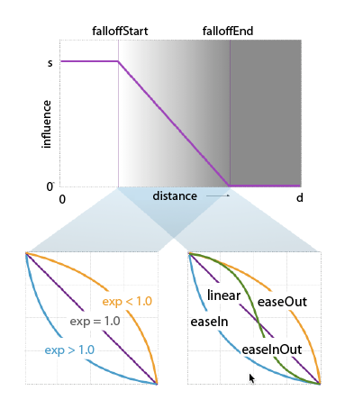
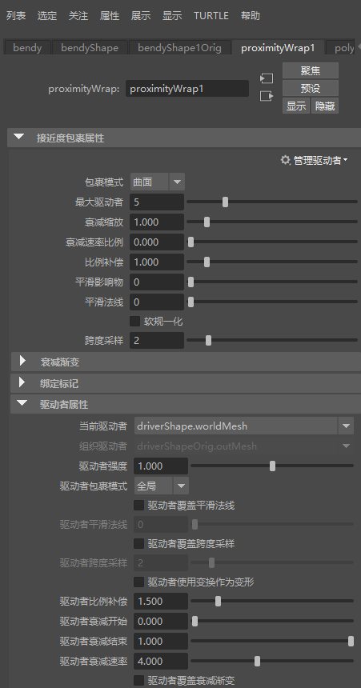
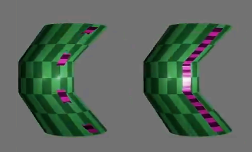
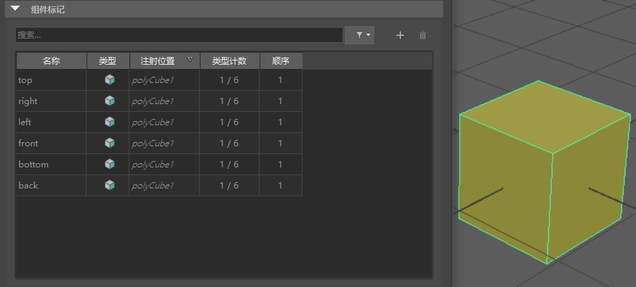

- 在“建模”(Modeling)、“绑定”(Rigging)和“动画”(Animation)菜单集中：
本主题介绍了“接近度包裹”(Proximity Wrap)窗口中的选项。有关使用“接近度包裹”(Proximity Wrap)变形器的信息，请参见创建接近度包裹变形器。
注： 在属性编辑器(Attribute Editor)的“接近度包裹”(Proximity Wrap)选项卡中，还提供了适用于“接近度包裹”(Proximity Wrap)变形器的其他控件。在本主题中，将在“基本”(Basic)和“高级”(Advanced)选项卡之后介绍这些控件。
“基本”(Basic)选项卡
- 包裹模式(Wrap Mode)
- 选择驱动者影响几何体的方法。如果设置为“全局”(Global)，各个驱动者都将使用此模式。
模式 行为 曲面(Surface) 在考虑曲面法线的同时移动所有内容。当“偏移”(Offset)模式失败时，请使用此模式。这种模式需要更多的时间来处理，因为它必须计算曲面法线。该设置为默认设置。 偏移(Offset) 根据加权影响，将驱动者移动的顶点数应用于目标顶点。它将忽略曲面方向，因此涉及严重旋转时，它可能会产生瑕疵。但如果不是这种情况，“偏移”(Offset)是将驱动者变形应用于目标的有效方式。 捕捉(Snap) 将几何体捕捉到驱动者，因此它的行为在某些方面与收缩包裹变形器类似。它也可用于调试，因为它清楚地说明了驱动者的哪些部分被目标绑定。 刚性(Rigid) 使用驱动者几何体来计算影响，且仅使用驱动者的变换来使目标变形。通过这种方式，其行为与 skinCluster 变形器十分类似。 簇(Cluster) 注： “簇”(Cluster)包裹选项仅在这些选项的“属性编辑器”(Attribute Editor)版本中可用。若要使用“簇”(Cluster)，请单击“属性编辑器”(Attribute Editor)的“ProxWrap”选项卡，然后使用其中的“包裹模式”(Wrap Mode)菜单。使用驱动者矩阵输入来变换顶点。 - 最大驱动者数(Max Drivers)
- 使用此字段可设置影响特定目标顶点的驱动者数量限制。设置为 1 时，每个顶点将使用最大影响的驱动者。这可能会产生不太理想的结果，但将其与后方变形器（如 Delta Mush 变形器）结合使用时，可以有效平衡速度和质量。通常，“最大驱动者数”(Max Drivers)设置为 3 或 4。
注： 如果使用非零值的“平滑影响”(Smooth Influences)，则每个顶点最终仍有可能受到比此处指定的更大的驱动者影响。
- 衰减缩放(Falloff Scale)
- 缩放所有驱动者的衰减距离。它是每个驱动者的 FalloffStart 和 FalloffEnd 的乘数。
- 平滑影响物(Smooth Influences)
- 根据每个顶点计算驱动者影响之后，您可以通过将它们分散在相邻顶点来平滑这些影响。此值设置得越高，影响将越扩散和平均化。

- 平滑法线(Smooth Normals)
- 仅当使用曲面包裹模式时才会处于活动状态。
- 此设置预先运行一个过滤器（而不是使用直接曲面法线）来平滑生硬更改。使用此设置可生成更柔和的外观结果。
“高级”(Advanced)选项卡
指定变形器节点在可变形对象的历史中的位置。
- 变形顺序(Deformation order)
- 当使用一个或多个变形器来变形对象时，变形的最终效果可能随变形发生顺序的不同而有所变化。选择变形顺序以获得所需的效果：
顺序 效果 默认(Default) 之前(Before) 强制变形器节点位于链中选定节点之前，即使必须创建新几何体形状也是如此。 之后(After) 强制变形器节点位于链中选定节点之后，即使必须创建新几何体形状也是如此。 分割(Split) 在依存关系图中分支出新链，而不是将变形器插入/附加到现有链中。 平行(Parallel) 将平行链中的变形器插入到对象历史中的任何现有变形器。 - 排除(Exclusive)
- 指定变形器集是否位于某个划分中。划分中的集不能有重叠的成员。如果启用，“划分名称”(Partition Name)字段将变为活动状态。默认设置为禁用。
- 划分名称(Partition Name)
-
列出任何现有划分和默认选择“deformPartition”。单击以编辑“deformPartition”字段，从而指定新划分的名称。
- 划分名称(Partition Name)
-
指定将包括变形器集的新划分的名称。建议的划分名称为 deformPartition，如果尚不存在，则将创建该名称。通常，可能会将所有排除式变形器集置于名为 deformPartition 的划分中。但是，可以根据需要创建多个划分并为这些划分命名。仅当“排除”(Exclusive)处于启用状态时才可用。
属性编辑器(Attribute Editor)
在属性编辑器(Attribute Editor)的“接近度包裹”(Proximity Wrap)选项卡中，可以找到适用于“接近度包裹”(Proximity Wrap)变形器的其他控件。

属性编辑器中的“ProximityWrap1”选项卡
- 接近度包裹属性(Proximity Wrap Attributes)
- 其中许多设置已在上述“接近度包裹”(Proximity Wrap)的“基本”(Basic)选项卡中进行了定义。以下其他设置仅显示在“属性编辑器”(Attribute Editor)的“接近度包裹”(Proximity Wrap)选项卡中。
-
- 坐标框架(Coordinate Frames)
-
用于设置曲面绑定到驱动者顶点帧的方式：
“坐标框架”(Coordinate Frames)设置：“驱动者”(Driver)（左）和“捕捉”(Snap)（右）
- 驱动者(Driver)：将与驱动者顶点关联的坐标框架绑定到变形的几何体。此设置是默认设置，但如果您希望变形更少地粘附到变形的几何体，请使用“坐标框架”(Coordinate Frames)“捕捉”(Snap)选项。
- 捕捉(Snap)：将驱动者顶点直接绑定到驱动者的单个多边形，从而创建线性程度更高的效果（请参见上面的比较示例）。
- 软归一化(Soft Normalization)
-
通常，将所有驱动者对特定顶点的影响进行归一化。启用“软归一化”(Soft Normalization)后，仅在总影响大于 1.0 的顶点上进行归一化。例如，影响量小于 1 的顶点不进行归一化，因此仅会受到接近度包裹变形器的部分影响，这使其像封套权重一样起作用。
最常见的用途是，使用驱动者距离衰减作为封套权重。
- 衰减速率比例(Dropoff Rate Scale)
- 使用“接近度包裹”(Proximity Wrap)执行蒙皮绑定时，使用此选项可控制来自驱动者的反向距离权重。请参见绑定蒙皮选项(Bind Skin Options)，将“变形器节点”(Deformer Node)从“蒙皮簇”(Skin Cluster)切换到“接近度包裹”(Proximity Wrap)。
- 比例补偿(Scale Compensation)
- 当所有驱动者都具有隐含缩放时，请使用此选项。这是驱动者比例补偿的逐驱动者设置的倍增。
- 有关接近度包裹驱动者的位置对 inputGeometry 变形有何影响的信息，请参见使用接近度包裹变形器进行全局缩放。
- 跨度采样(Span Samples)
- 为每个跨度设置一些采样以用于提高精度（仅限 NURBS 曲面驱动者）。
-
- 管理驱动者(Manage Drivers)
- 打开“管理驱动者”(Manage Drivers)菜单，从中可以将几何体指定为驱动者。
将选定项添加为驱动者(Add Selected as Driver) 将选定基本体连接到变形器，并成为变形的驱动者。 移除作为驱动者的选定项(Remove Selected as Driver) 断开选定基本体与变形器的连接，使其不再驱动变形。 编辑新驱动者默认值(Edit New Driver Defaults) 打开接近度包裹驱动者(Proximity Wrap Drivers)窗口，从中可以配置驱动者默认设置。 -
注： 使用“固定选项卡”(Pin Tab) 选项以锁定“属性编辑器”(Attribute Editor)中的“接近度包裹”(Proximity Wrap)选项卡，以便您可以选择几何体，而无需切换选项卡。
- 衰减渐变(Falloff Ramp)
- 定义驱动者的全局衰减曲线的形状。单击 > 箭头将衰减曲线卷展到可调整衰减的较大窗口。
-
- 选定位置(Selected Position)
- 采用归一化 0-1 比例的渐变值位置。
- 选定值(Selected Value)
- 同级位置处的渐变值。
- 插值(Interpolation)
- “渐变插值”(Ramp Interpolation)控制计算中间值的方法。
无(None) 不执行插值；不同的颜色在最终纹理中显示为不同的条带。 线性(Linear) 这些值在 RGB 颜色空间中进行线性插值。 平滑(Smooth) 这些值沿着钟形曲线插值，渐变中的每种颜色将填充其周围的区域，然后快速融合至下一种颜色。 样条线(Spline) 值使用样条曲线进行插值，并使用相邻索引以实现更出色的平滑度。
- 绑定标记(Bind Tags)
-

使用“绑定标记”(Bind Tags)修复意外的顶点指定
- 如果变形网格上出现意外结果，请激活“绑定标记”(Bind Tags)选项。变形器错误地将顶点指定给标记几何体上的随机驱动者顶点，会在上述动画中的变形几何体中产生撕裂效果。当默认的组件标记导致与驱动者顶点位置冲突时，会出现此问题。
- “绑定标记”(Bind Tags)过滤器可用于使用运算符对组件标记进行排序（有关可用于过滤的运算符的详细信息，请参见组件标记表达式）。
-
注： 默认情况下，组件标记包含在某些基本体中。如果不希望应用这些标记，请转到属性编辑器(Attribute Editor)中的基本体选项卡（例如，Cube1），并禁用“创建组件标记”(Component Tag Create)选项。
polyCube1 的默认组件标记。
- 驱动者属性(Driver Attributes)
- 设置以下驱动者属性可使几何体变形。
-
- 当前驱动者(Cur Driver)
- 变形或变换驱动者几何体。此几何体的变形和/或变换将应用于目标几何体（或要变形的几何体）。当此驱动者设置为“刚性”(Rigid)包裹模式时，仅使用此几何体的矩阵。
- 组织驱动者(Org Driver)
- 驱动者的绑定几何体。此设置可用于计算目标几何体的接近度以及驱动者对目标几何体的影响。
- 强度(Strength)
- 调整驱动者的相对影响。此倍增用于增加或减少某一驱动者相对于其他驱动者对相同顶点造成的影响。
- 包裹模式(Wrap Mode)
- 指定此驱动者的包裹模式。驱动者影响几何体的全局方法。如果设置为“全局”(Global)，各个驱动者都将使用此模式。有关说明，请参见上述“基本”(Basic)选项卡中的“包裹模式”(Wrap Mode)。
- 覆盖平滑法线(Override Smooth Normals)
- 如果希望驱动者覆盖“平滑法线”(Smooth Normals)值，请激活此选项。
- 平滑法线(Smooth Normals)
- 为驱动者的曲面法线设置平滑迭代。
注： 这仅适用于网格驱动者。
- 覆盖跨度采样(Override Span Samples)
- 处于活动状态时，驱动者将覆盖下述“跨度采样”(Span Samples)值。
- 跨度采样(Span Samples)
- 为每个跨度设置采样数量以用于提高精度（仅限 NURBS 曲面驱动者）。
- 变换作为变形(Transform as Deformation)
-
注： “变换为变形”(Transform as Deformation)仅显示在
- 如果希望驱动者考虑来自其他变形器的隐含变换，请启用此选项。如果取消激活“使用变换作为变形”(Use Transform as Deformation)，则不会考虑来自变形器的变换。
注： 若要使用其他变形器的隐含变换，还可以将变形器“世界矩阵”(World Matrix)属性连接到节点编辑器中的“接近度包裹”(Proximity Wrap)的“驱动者簇矩阵”(Driver Cluster Matrix)属性。注： 有关示例，请参见使用接近度包裹变形器进行全局缩放。
- 比例补偿(Scale Compensation)（驱动者）
- 驱动者具有隐含缩放时的比例补偿。这可以与将矩阵连接到 driverClusterMatrix 的选项组合使用或进行替换。
- 衰减开始(Falloff Start)
- 距影响开始下降的驱动者的距离。
- 衰减结束(Falloff End)
- 距影响完全消失的驱动者的距离。
- 覆盖衰减渐变(Override Falloff Ramp)
- 如果希望驱动者覆盖衰减渐变值，请激活此选项。
- 衰减指数(Falloff Exp)
- 控制影响在衰减范围内（FalloffStart 和 FalloffEnd 之间）的变化程度。衰减指数 1.0 不会更改衰减形状。当值大于 1.0 时，将进一步减少影响下限；当值小于 1.0 时，将增加影响下限。
- 驱动者衰减渐变(Driver Falloff Ramp)
- “衰减曲线”(Falloff Curve)用于指定衰减曲线的形状，以便能够缓和变形效应的降低方式。有四种预设形状：“缓入缓出”(EaseInOut)、“缓入”(EaseIn)、“缓出”(EaseOut)和“线性”(Linear)。
-
- 选定位置(Selected Position)
- 采用归一化 0-1 比例的渐变值位置
- 选定值(Selected Value)
- 同级位置处的渐变值。
- 插值(Interpolation)
- 控制计算中间值的方法。从以下选项选择：
值 操作 无(None) 无插值；不同的颜色在最终纹理中显示为不同的条带。 线性(Linear) 这些值在 RGB 颜色空间中进行线性插值。 平滑(Smooth) 这些值沿着钟形曲线插值，渐变中的每种颜色将填充其周围的区域，然后快速融合至下一种颜色。 样条线(Spline) 这些值使用样条曲线插值，它们将考虑相邻索引，以实现更出色的平滑度。